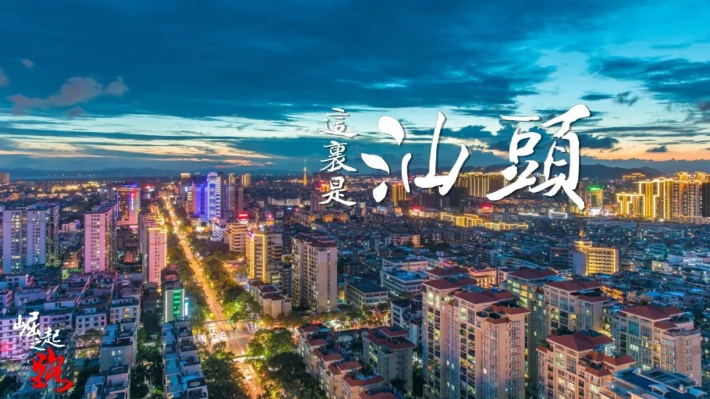
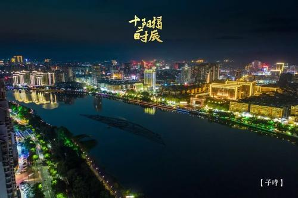

广济桥（Guangji Bridge）俗称湘子桥，始建于公元1171年，与赵州桥、洛阳桥、卢沟桥并称为“中国四大古桥”。
桥面古香古色，桥身横跨韩江，并集梁桥、拱桥和浮桥于一体，结构十分特殊，堪称我国桥梁世上的孤例。素有“到潮不到桥，枉费走一遭”之说。
南澳是广东唯一的海岛县，也是目前全国（包括台湾）14个海岛县（区）中唯一的全岛域国家4A级旅游景区。
南澳岛总面积约114.74平方公里, 由南澳岛及周边35个岛屿组成，其中主岛111.73平方公里，海域4600平方公里。处于闽、粤、台三地交界海面，距西太平洋国际主航线仅7海里，素有“粤东屏障 闽粤咽喉”之称，历来是东南沿海通商的必经泊点和中转站，也是对台和海上贸易的主要通道、“海上丝绸之路”的重要节点。
黄岐山位于广东省潮汕地区揭阳市区北部，自揭阳市榕城向东北4公里，市区晓翠路一直延伸到公园大门前，主峰海拔293.1米，总面积1180公顷，为黄岐山风景区。此处林木葱郁，群石嵯峨，胜迹众多，古有九庵十八寺之说。黄岐山是揭阳历史文化名城的一个象征，自古以“黄岐晚翠”列为揭阳八景之一，是揭阳最出名的山脉
潮州，广东省地级市，汕潮揭都市圈城市之一，广东省政府批复确定的广东省东部门户城市 。潮州地处中国广东东部，北靠梅州，南濒南海，东邻漳州，西接揭阳、汕头。下辖2个区、1个县（2019年），总面积3146平方千米。2020年末，潮州市户籍总人口275.93万人。
潮州是中国优秀旅游城市、对外开放旅游城市 [7] 、国家历史文化名城，中国瓷都，中国岭头单丛茶之乡、全国重点无公害农产品（茶叶）生产示范基地 、中国食品名城 、国家园林城市，潮州菜之乡、中国不锈钢制品之乡、中国民族民间艺术之乡，革命老区苏区 、华侨之乡、港澳台同胞祖籍地之一。
汕头，简称“汕”，广东省地级市，汕潮揭都市圈城市之一，经济特区。位于韩江三角洲南端，北接潮州，西邻揭阳，南濒南海，与台湾隔海相望，境内韩江、榕江、练江三江入海，是中国大陆唯一拥有内海湾的城市。
汕头是中国东南沿海重要港口城市、海上丝绸之路重要门户、广东省域副中心城市、中国沿海开放港口城市、中国著名侨乡，中国优秀旅游城市、中国投资环境百佳城市、中国品牌经济城市、国家知识产权工作示范城市、国家电子商务示范城市、国家信息消费试点城市、全国双拥模范城、中国文具生产基地、国家交通枢纽城市。素有“华南要冲、海滨邹鲁、美食之乡”美称。
汕头是潮汕人重要的祖籍地、聚居地之一，潮汕文化重要的发源地、兴盛地之一。凡“有海水的地方就有潮人”，有潮人的地方无疑就有潮汕文化的存在。汕头潮汕文化是中华民族优秀传统文化的一个分支，有中外文化兼容的特点，以潮汕方言、潮汕英歌舞、潮剧、潮菜、潮绣、工夫茶、潮汕工艺、潮汕抽纱、潮汕民居、潮汕善堂、潮汕商帮、潮汕木雕、迎老爷、出花园等特色文化为代表。汕头市海外华侨及港澳台同胞500多万人，遍布世界100多个国家和地区。
揭阳市，别称“岭南水城”，广东省地级市，汕潮揭都市圈城市之一。地处粤港澳大湾区与海西经济区的地理轴线中心。辖2个区、2个县、代管1个县级市。陆地总面积5240平方千米，海域面积9300平方千米。2020年末，揭阳市户籍总人口达711.19万人。
揭阳境内主要有榕江、龙江和练江三大水系，广东省第二大深水河榕江南北两河环绕揭阳市区，形成独特的水上莲花形状，有着“鱼米之乡”“浮水葫芦”、“水上莲花”之美称。揭阳因古五岭之一的揭阳岭得名，见诸史载已有2200多年。是潮汕地区历史较长、面积最大、人口最多的新兴城市，是中国玉都，“亚洲玉都”，“中国不锈钢制品生产基地，广东省历史文化名城，有“海滨邹鲁”、“国画之乡”“小戏之乡”“龙舟之乡”之美称。揭阳是广东沿海经济带东翼主战场，揭阳滨海新区是广东省委省政府专门规划、专项政策支持打造的广东沿海经济带重点平台。